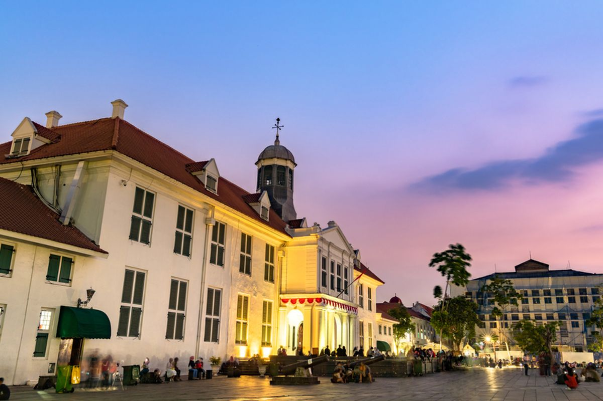
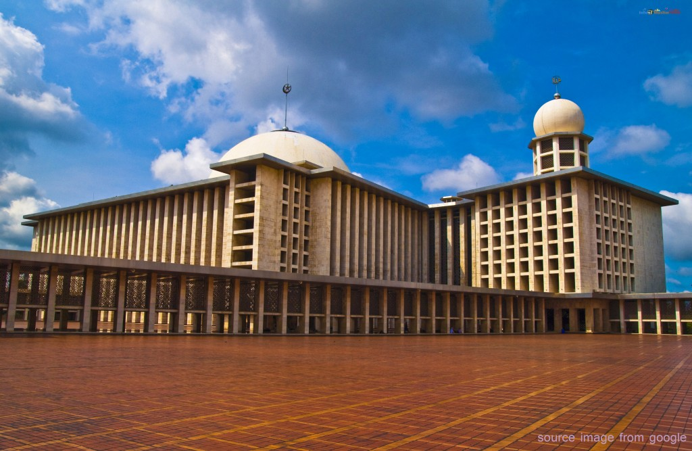
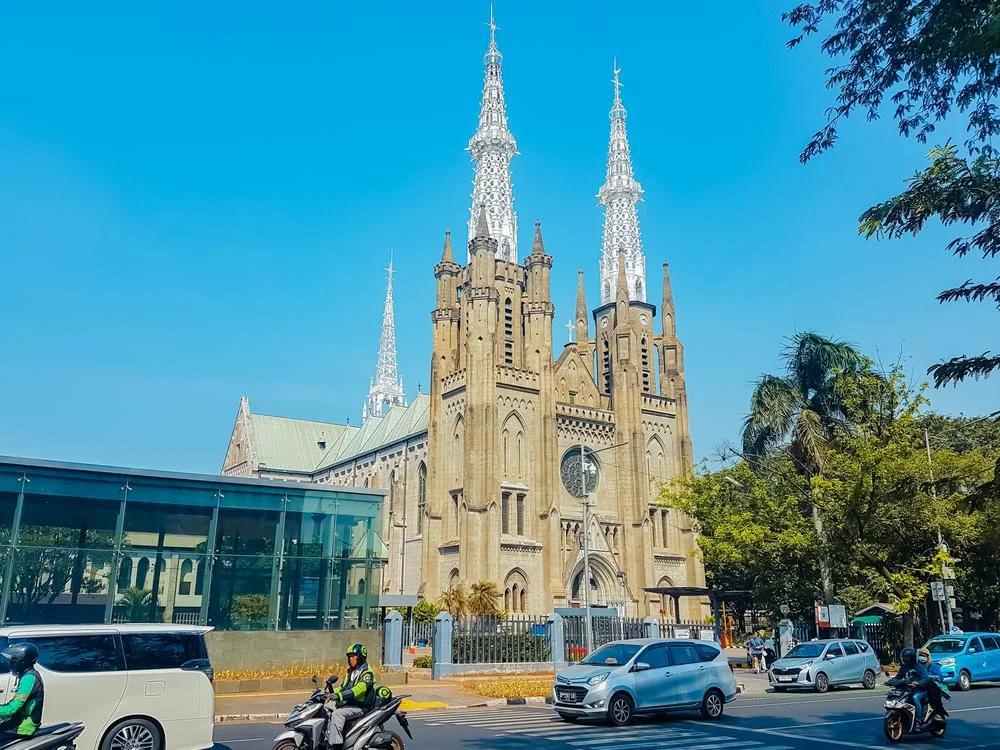
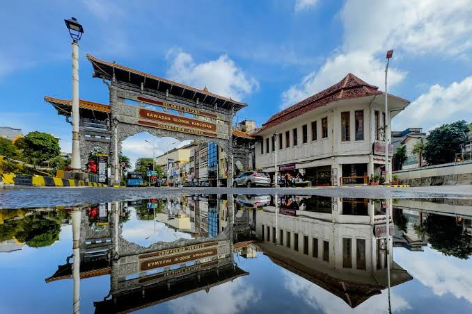
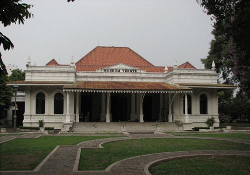
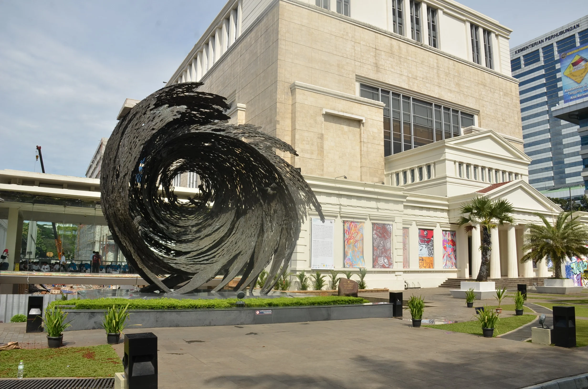

Jakarta's Old Town is a historic district filled with Dutch colonial buildings and a nostalgic atmosphere. Here, you can explore the Fatahillah Museum, Jakarta City Hall, and Sion Church, while taking photos around the iconic Fatahillah Park. The area is also filled with cafes, restaurants, and vintage-style souvenir shops.
Detailed Information :
The Istiqlal Mosque is the largest mosque in Indonesia and one of the largest in the world, located directly across from the Cathedral as a symbol of tolerance. Inaugurated in 1978, it features modern architecture with a massive dome, towering minarets, and a spacious prayer hall. The beauty of its interior, adorned with Islamic art details, makes it a popular destination for religious tourism and photography.
Detailed Information :
Jakarta Cathedral is the largest Catholic church in Indonesia, featuring magnificent Neo-Gothic architecture on Jalan Katedral, directly across from Istiqlal Mosque. Built in 1901, the building features high ceilings, beautiful stained-glass windows, and stunning ornamental details. It's frequently visited by tourists who come to enjoy its architectural beauty and serene atmosphere.
Detailed Information :
Glodok Chinatown is the center of Jakarta’s Chinese community, renowned for its classic atmosphere, delicious cuisine, and traditional shops. Located in West Jakarta, Glodok has long been the heart of Chinese culture in the capital Here, you can stroll through narrow streets lined with old buildings typical of Chinatown while sampling legendary dishes such as bakmi, lumpia, and bakpao. Beyond its culinary offerings, the market also features antiques, handicrafts, and unique Chinese-style trinkets.
Detailed Information :
The Jakarta Textile Museum is a center for preserving traditional Indonesian textiles, showcasing collections of batik, woven fabrics, songket, and ethnic textiles from various regions. Visitors can explore various fabric patterns and techniques, and even witness the batik-making process firsthand in the on-site workshop. The museum also regularly hosts temporary exhibitions focused on textile art.
Detailed Information :
Built in 1868, this is the largest and most extensive museum in Indonesia, located on Jalan Kemerdekaan Barat in the city center. It's also known as the "Elephant Museum" because of a bronze elephant statue donated by King Rama V of Siam in 1871. The museum features galleries of gold and silver jewelry, bronze artifacts, ancient coins, and relics from China's Bronze Age, among many other historical collections.
Detailed Information :